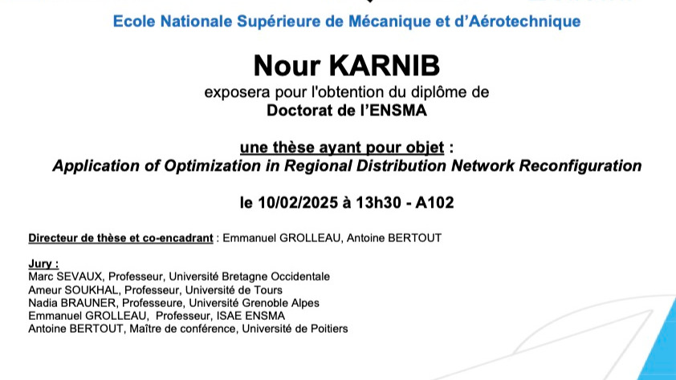

LIAS Laboratory
lias_laboratory
{Soutenance Thèse} Nour KARNIB @lias_laboratory soutiendra sa thèse de doctorat Informatique #ensma dont le titre est "Application of Optimization in Regional Distribution Network Reconfiguration" le 10/02/2025 à 13h30 en A102 #ensma
En savoir plus sur le site du LIAS
➡️ https://www.lias-lab.fr/seminars/
Calcul en cours...